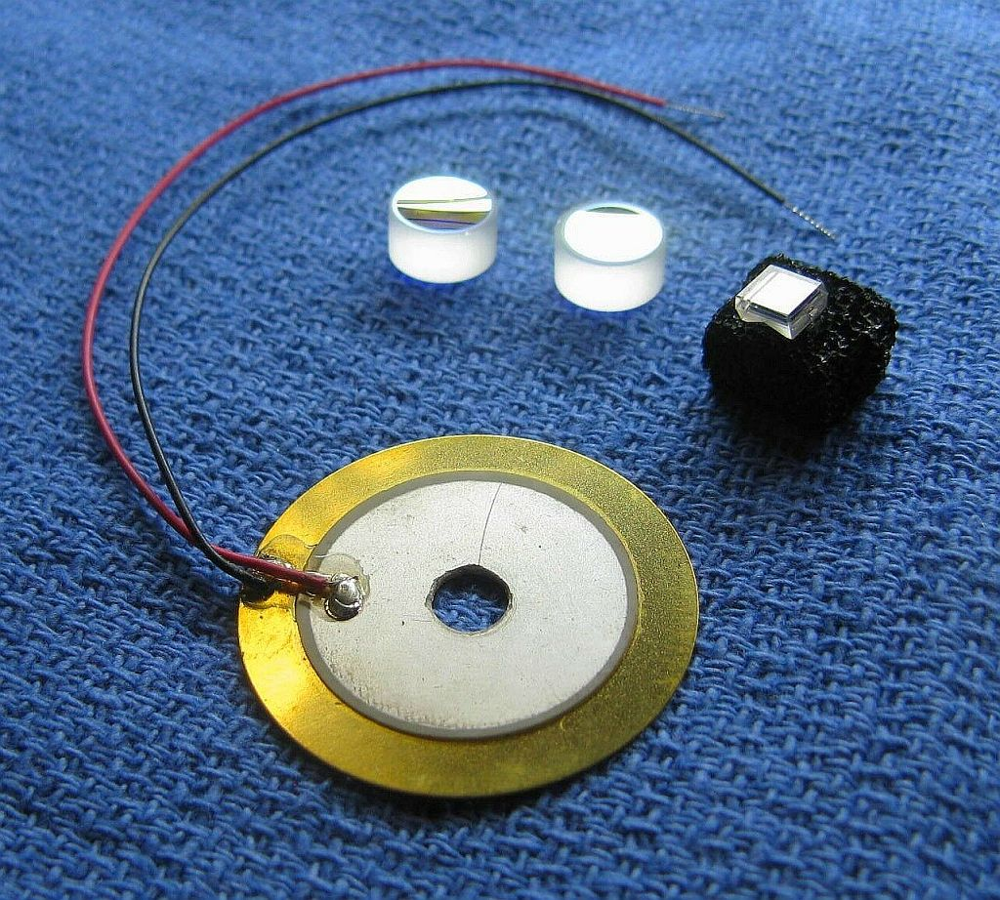
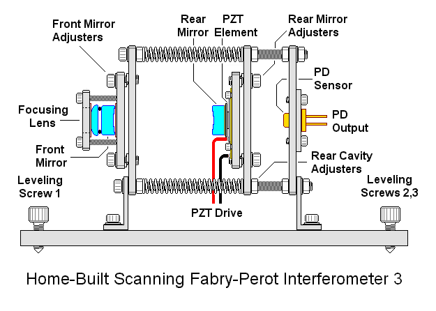

Copyright © 1994-2025
Sam Goldwasser
--- All Rights Reserved ---
Wavelengths beyond 633 nm and slightly below 594 nm should work as well, but NOT down to 543 or 532 nm. Performance is best with narrow beam lasers like HeNes but the use of an aperture beam reduction optic should allow the modes of fat beam lasers to be displayed as well. The advantage of a confocal SFPI is that alignment with respect to the laser being tested is much less critical than with a planar-planar SFPI and back-reflections can be off-axis so that the laser is less likely to be destabilized.
The general optical layout is shown below:
For the confocal configuration, L = RoC of the mirrors, which must be exactly equal. In this kit, the PZT ring has been replaced by the "holey" beeper element which is more sensistive and a lot less expensive. There is no need for an output focusing lens because the beam is already very narrow.
The typical parts are shown below:

The kit includes the following:
The parameters of the new mirrors are similar to those of the classic Spectra-Physics 470-03 SFPI head.
If in doubt about which version you have, the easiest way to tell them apart is by the color of their reflection of white light: The older mirrors are deep yellow while the new mirrors are silver with a slight bronze tint.
There is generally no reason to prefer the older mirrors except to match a previous version of the SFPI. The finesse at some wavelengths may be slightly higher but that is not usually significant. And with no wedge, mounting of the new mirrors is simplified. ;-)
CAUTION: The mirror coating on the highly curved surface is extremely delicate. DO NOT TOUCH. These should be clean, requiring at most to have dust blown off with a air bulb. If cleaning is needed, ONLY use laser mirror cleaning techniques! The warranty does not cover damage to mirror surfaces! I suggest NOT removing the mirrors from the lens tissue until ready to use. They look kind of cool but are just mirrors! ;-)
If desired, the mirror set can be used for mode degenerate SFPI configurations other than confocal using different cavity spacings. The confocal setup is generally most useful, but 1/2 confocal is more compact and has a larger FSR with a slight sacrifice in finesse. This is left as an exercise for the student. More info at Mode Degenerate Fabry-Perot Interferometers.
The attachment of the leads to the PZT disk is rather fragile, especially the one soldered to the metallic coated area which is only loosely bonded to the PZT material itself. So it would be a good idea to coat only the immediate area of the solder blobs with some 5 minute Epoxy to minimize stress, and then to add a strain relief when installed in the SFPI assembly.
The PD can be connected via shielded cable directly to the vertical input of your scope with a 10K ohm load resistor. However, it is better to connect the PD in series with the load resistor and back-bias it with a few volts (e.g., a 9 V battery). With back bias, the response (across the load resistor) will be linear up to several mW. Something along the lines of:
Shielded Cable
R Protect PD1 Center
+-----/\/\-------|<|-----------------------+----o Scope input (direct)
| 1K ohms +--------------+ |
| (Optional) | Shield | /
| | | \ R Load
| | | / 10K ohms
| | | \
| +| | - | | |
+------||||-------------+ +---+----o Scope Gnd
B1 | |
This is similar to what is in a Thorlab biased detector like the DET-210.
Confirm that the PD is responding to light. Room light will suffice, but a better test source is a dimmable LED flashlight. These use Pulse Width Modulation (PWM) to chop the light output and a pulsed waveform should be clearly visible on the scope.
For initial setup, leave the entire photodiode uncovered. Once there is a signal, installing an aperture to block all but the central 1 mm or so may improve resolution. For low power lasers, a preamp would be beneficial.
Dual polarization option:
For simulataneously monitoring the orthogonally polarized longitudinal modes of a random polarized HeNe or other similar laser, this adds an additional photodiode and a small polarizing beam-splitter cube (PBSC). The PBSC splits the beam to the two photodiodes. The simplest mechanical arrangement is to attach the PDs to the PBSC directly with adhesive such as 5 Minute Epoxy. The PDs should be wired independently and sent to separate channels of your scope. The SFPI "head" will then need to be oriented to align with the polarization axes of your laser.
Note1: There may be some crosstalk between the two channels due to slight changes in polarization after multiple reflections. Information is available to construct a dual polarization preamp which provides adjustable compensation for this. Inquire for details.
Note2: The PBS included with the dual polarization option may not work well below around 590 nm. Sorry. But it is primarily intended for use with red (633 nm) HeNe lasers where the orthogonality of adjacent modes are most prevelent.
The diagram below shows just one example of a suitable design using Home-Depot hardware and scrap parts. This is actually more complex than needed with everything adjustable. With a short spherical mirror SFPI like this, careful assembly without any user adjustments except to be able to set the cavity spacing precisely will suffice - alignment of the overall SFPI with respect to the laser will be work just fine, thank you. :) The other extreme is to use Newport or Thorlabs optical breadboard components. But if you can afford those, you may not need to be messing around with this kit! But see the Deluxe SFPI kit!
A pair of mounts for 1 inch optics would be best. Use an adapter (available from Thorlabs) to install one of the mirrors in its mount. Attach this to a linear slide on a baseplate with a micrometer adjustment. Glue the other mirror to the PZT center using 3 dabs of 5 Minute Epoxy. DO NOT USE SUPERGLUE!!!!! Once the adhesive has cured, attach the PZT to the other mirror mount so it contacts only around its perimeter (to allow the center to move). Use an insulating pad and fasteners if it is to electrically float. Attach this mount to the baseplate with a spacer (if needed) so the centers of both mounts are precisely in-line.
Note that the "older mirrors" were ground with some "wedge". A shim should be placed behind the mirror at the low side to compensate. A piece of an Avery™ sticky label works well. ;-)
A focusing lens with a focal point roughly in the center of the cavity (shown in the diagram but not included in the kit) may improve performance under some conditions but is not essential.


More likely, the peaks will be smeared out or composed of multiple small blips as in the sequence of graphics below. Or there may be nothing at all. Adjust the spacing of the mirrors in small increments Slowly and then then let it settle down. With any movement, the display will become quite scrambled, so be patient. If going one way makes it worse, go the other way. :) If the initial cavity spacing was within about 1 mm of being optimal, there should be only one place close by where it resolves into a beautiful display like the one above. ;-)

These simulated "screen shots" depict a display spanning 2 FSRs for an SFPI using 42 mm RoC mirrors with 99.5%R as the cavity length approaches optimum. From left-to-right, top-to-bottom, the error is approximately: 0.3 mm, 0.15 mm, 0.07 mm, 0.03 mm, 0.015 mm, 0 mm.
The entire sequence represents a cavity length change of <1 percent but will also depend on the finesse and the mode order (confocal, half confocal, etc.). The higher the finesse, the more critical it will be. In other words you mileage may vary. :) The amplitude of the peaks would actually increase by a much larger amount than shown. Which side the "crud" is on depends on the relationship of the ramp voltage to cavity length, swap if backwards. :) Some of these diagrams are originallly from the Toptica SFPI 100 manual, I hope they won't mind. :)
First time users do not appreciate how precise the spacing needs to be. But it's less than 1/10th the width of a human hair - a few microns. Once close, the only effective way of fine tuning it is with precision screws that change spacing such as would be found in a linear translation stage, a 3-screw pan/tilt mount (which can be easily constructed from scrap parts), or something equivalent.
It's also essential to avoid back-reflections into the laser, which will likely destabilize it and create chaos in the display. The alignment should be adjusted such the the reflections from the SFPI (mostly the front mirror) do NOT enter the laser's aperture. With the confocal cavity SFPI, a slight offset will not significantly affect resolution. Ideally, an optical isolator could be used but they are really pricey.
Using mirrors identical to the ones in the kit, I've seen a finesse at 633 nm of 500 or more, though this depends on all the stars aligning perfectly. :) And I can't guarantee that all samples are that good. But expect a finesse of several hundred with reasonable care. Performance at other wavelengths may not be as good but it should still be usable to below 594 nm (yellow HeNe) and above 650 nm (may actually be better at longer wavelengths).
While the assembly guidelines here assume the standard confocal cavity configuration, there are smaller and larger mirror spacings that are still mode-degenerate making alignment non-critical. Some of these may be useful by trading off size, FSR, and resolution.
For more on SFPIs, see the section: Scanning Fabry-Perot Interferometers of "Sam's Laser FAQ".